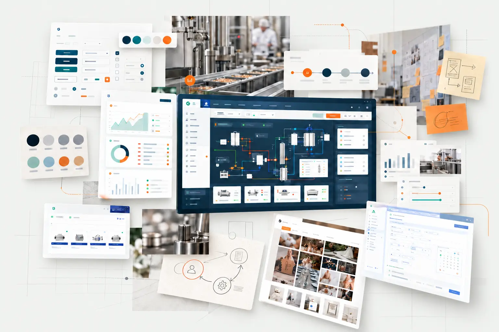

Observer
Comprendre les usages, le contexte et les contraintes.
Je relie usages, métier et technique pour concevoir des produits utiles et réalisables.

Faire défiler / sélectionner un projet pour découvrir l’étude de cas.
J’entre dans un domaine pour en comprendre les utilisateurs, le vocabulaire, les contraintes et les mécanismes. Mon rôle consiste ensuite à transformer cette compréhension en une solution claire, cohérente et réalisable.
Mon expérience en indépendante puis dans l’industrie m’a appris à relier la conception aux réalités du terrain, aux objectifs du projet et aux possibilités de développement.
Comprendre les usages, le contexte et les contraintes.
Clarifier le problème et partager les priorités.
Construire les parcours et interfaces avec les équipes.
Confronter, ajuster et capitaliser sur les retours.
J’utilise également l’IA comme outil d’exploration, de structuration et de contrôle. Elle complète l’analyse sans remplacer le terrain, les utilisateurs ni la responsabilité de la décision.